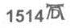
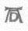

66. BÖLÜM
Langdon, Katherine’e, “Buradan çıkmalıyız,” dedi. “Yerimizi bulmaları an meselesi.” Bellamy’nin kaçabilmiş olmasını ümit ediyordu.
Yazının hiçbir şey açıklamıyor olmasına hâlâ inanamayan Katherine, altın kapak taşına kilitlenmiş gibi görünüyordu. Kapak taşını kutudan çıkarmış ve tüm kenarlarını incelemişti. Şimdiyse dikkatle kutuya geri koyuyordu.
Langdon, sır Düzen’in içinde gizli, diye düşündü. Çok yardımcı oldu.
Langdon şimdi, Peter’ın da kutunun içindekiler hakkında yanlış bilgilendirilmiş olabileceğini düşünüyordu. Bu piramit ve kapak taşı, Peter doğmadan çok önce yapılmıştı. Peter ise Langdon ve Katherine kadar kendisi için de gizemini koruyan bir sırrı saklayarak, büyükbabalarının ona söylediğini yapmıştı.
Langdon, ne bekliyordum ki; diye düşündü. Mason Piramidi efsanesi hakkında öğrendiği bilgiler arttıkça her şey aklına daha çok yatmaya başlıyordu. Büyük bir taşla kapanmış gizli bir sarmal merdiven mi arıyorum? İçinden bir ses Langdon’a boşa kürek çektiğini söylüyordu. Yine de bu piramidi deşifre etmek, Peter’ı kurtarmak için yapabileceği en iyi şey gibi görünüyordu.
“Robert, 1514 yılı senin için bir şey ifade ediyor mu?”
1514? Bu soru hiçbir şey çağrıştırmamıştı. Langdon omuzlarını silkti. “Hayır. Neden?”
Katherine, ona taş kutuyu uzattı. “Bak. Kutuya tarih atılmış. Işığın altoda bak.”
Langdon bir sandalye çekip, küp şeklindeki kutuyu ışığın altoda inceledi. Katherine elini omzuna koyup, kutunun dış tarafında alt köşeye kazınmış minik yazıyı göstermek için eğildi.
Kutuyu işaret ederken, “1514, A.D.,”dedi.
Yazıda 1514 sayısı açıkça görülüyordu, fakat takip eden A ve D harfleri alışılmadık bir karakterle yazılmışlardı.

Katherine ümit dolu bir sesle, “Belki de aradığımız bağlantı bu tarihtir?” dedi. “Bu eski küp, masonik köşe taşlarını fazlasıyla andırıyor. Bu yüzden belki de gerçeklik köşe taşını işaret ediyordur. Belki de 1514’te inşa edilmiş bir bina vardır?”
Langdon, Katherine’in söylediklerinin bir kısmını duymuştu.
1514, A.D., tarih değil.
 sembolü ortaçağ sanatıyla ilgilenen pek çok akademisyenin de tanıyabileceği gibi, çok iyi bilinen bir sanatçı imzası, daha doğrusu imza yerine kullanılan bir semboldü. Eski filozoflar, ressamlar ve yazarlar, eserlerine isimlerini yazmak yerine kendilerine özel, benzersiz bir sembol ya da isimlerinin başharfleriyle imzalarlardı. Bu uygulama, eserlerine gizemli bir hava katmakla birlikte, yazıları veya eserleri kiliseye aykırı görülürse onları işkenceden de korurdu.
Bu sanatçı imzasındaki A.D. harfleri Anno Domini{56} anlamına gelmiyordu... Alman dilinde bambaşka bir şey söylüyordu.
Langdon bir anda tüm parçaların yerine oturmaya başladığını fark etti. Birkaç saniye sonra şifreyi nasıl çözeceğinden emindi. Toplanırken, “Katherine, başardın,” dedi. “İhtiyacımız olan tek şey buydu. Haydi gidelim. Sana yolda açıklarım.”
Katherine şaşkınlık içindeydi. “1514 A.D. tarihi sana gerçekten de bir şey ifade ediyor mu?”
Langdon, ona göz kırpıp kapıya yöneldi. “A.D. tarih değil, Katherine. Bir kişi. ”